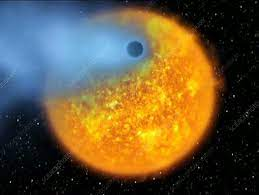

Geçiş halindeyken (yıldızını geçerken) görülen ilk gezegen ve ışığını doğrudan tespit eden ilk gezegen.

HD 209458b geçiş keşfi, geçiş gözlemlerinin mümkün olduğunu gösterdi ve tamamen yeni bir ötegezegen karakterizasyonu alanı açtı.
Kredi:NASA, European Space Agency, Alfred Vidal-Madjar (Institut d'Astrophysique de Paris, CNRS)